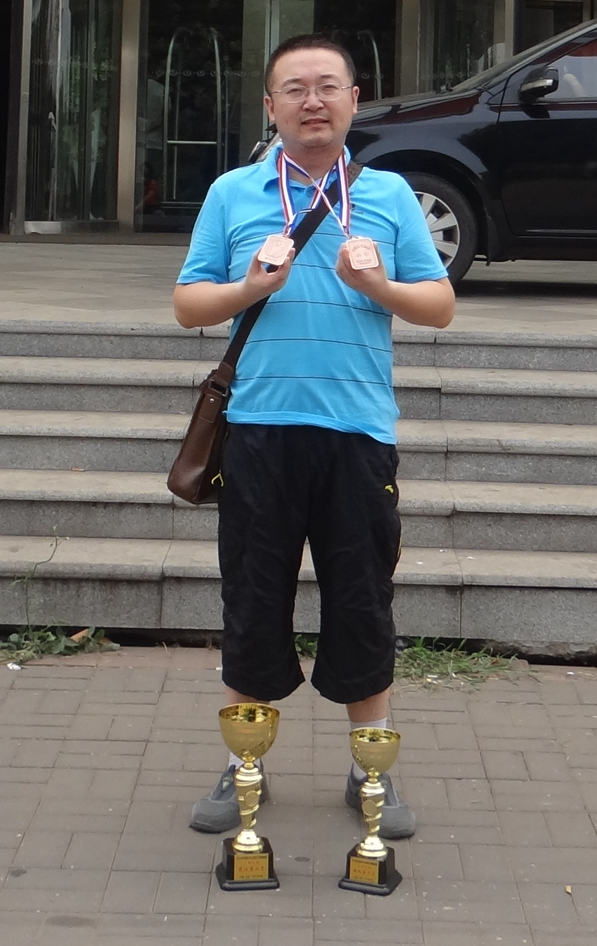

2014年全少赛归来（国际惯例）^-^
#1 2014年全少赛归来（国际惯例）^-^ 作者：黄药师 发表时间：2014-8-4 23:26:59

今年虽然成绩没有前几年好，好歹混2块铜的挂挂 。来年再说
。来年再说
今年在恐怖的 直通赛道 炎热蒸烤下，宾馆房间的空调吹拂下，发热扁桃体化脓，本来准备发布一些赛场消息的，根本无力去做，最大限度就是陪孩子进赛场然后立刻就出来回房间休息。最后俩天更是直接去医院挂水。
话说那个 直通赛道 也忒恐怖了，走过去好比 戈壁沙漠 。
。
#2 Re:2014年全少赛归来（国际惯例）^-^ 作者：卡布奇诺的味道 发表时间：2014-8-4 23:34:01
这次的酒店确实很有问题，我们一大半孩子感冒，家长都说以后天津比赛都不去了。意见很大。#3 Re:2014年全少赛归来（国际惯例）^-^ 作者：卡布奇诺的味道 发表时间：2014-8-4 23:36:08
如果把少儿都得罪了,五子棋就彻底被搞死了.领导要重视啊.#4 Re:2014年全少赛归来（国际惯例）^-^ 作者：黑白子 发表时间：2014-8-4 23:37:58
［此帖子已被 黑白子 在 2014-8-4 23:38:43 编辑过］
#5 Re:卡布奇诺的味道【==Re:2014年全少赛归来（国际惯例）^-^==】 作者：卢老师 发表时间：2014-8-5 4:24:27
这次2014年天津全少赛是国内五子棋比赛有史以来最失败的。
时间安排不合理，地点安排不合理，赛场安排不合理，等等。
250也是最昂贵的，吃的是最差的。250?
［此帖子已被 卢老师 在 2014-8-5 4:31:01 编辑过］
#6 Re:2014年全少赛归来（国际惯例）^-^ 作者：黄药师 发表时间：2014-8-5 7:59:55
话说我们从南通飞来还遇到航空管制，延误6小时，还好没有取消航班。#7 Re:2014年全少赛归来（国际惯例）^-^ 作者：茗弈小蝴蝶 发表时间：2014-8-5 10:34:56
还是去年的黄药师霸气，那个奖牌都挂满了，奖杯多到还要其他人帮着拿。不过，总有潮起潮落的时候，明年再努力！！！［ 黄药师同学于 2014-8-5 11:08:54 时花20金币送鲜花一朵］
#8 Re:2014年全少赛归来（国际惯例）^-^ 作者：絕版賭徒 发表时间：2014-8-11 22:35:50
黄老邪明显保存实力。。。